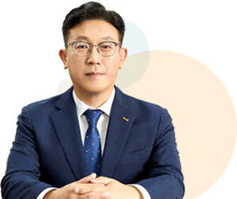
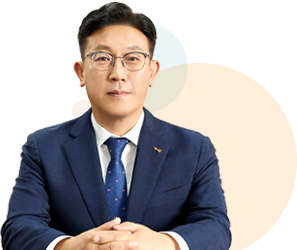

The-K 예다함㈜의 CEO를 소개합니다
 

안녕하십니까?
The-K 예다함㈜ 대표이사 김도한입니다.
The-K 예다함은 한국교직원공제회가
국민 복지 향상을 위해 업계 최대 자본금 500억 원을 전액 출자하여 설립한 상조회사입니다.
The-K 예다함은 고객께서 주신 한결같은 사랑을 바탕으로 국내 상조산업을 선도해 오고 있으며,
탄탄한 재무적 기반으로 2023년까지 최근 10년간 연속 흑자를 기록했습니다.
또한 고객이 납입한 납입금을 철저하게 보호하기 위한 장치로 ‘제1금융권 6개 은행’과 ‘지급보증계약’을 체결하고
있을 뿐만 아니라 한국교직원공제회의 ‘연대지급보증제’로 완벽한 2중 안전망을 구축하여
국민 모두가 안심하고 가입할 수 있습니다.
‘The-바른, The-다른, 대한민국 상조의 기준점’ 이라는 기업비전을 실천하기 위해 ‘전국 직영 의전서비스망 구축’,
‘전문 자격증 취득 장례지도사 채용’, ‘부당행위보호시스템’, ‘품질보증시스템’등의 서비스를 제도화하여
진실한 상조서비스 제공에 최선을 다하고 있습니다.
The-K 예다함은 저소득 조손가정 장례지원, 우수인재 장학급지급 등 ‘사랑[愛]다함’이라는 공유가치창출(CSV) 프로젝트 및
사회공헌활동을 통해 기업의 사회적 책임을 적극이행하고 있습니다.
The-K 예다함은 앞으로도 정직한 투명경영으로 올바른 장례문화 정착에 전 임직원이 각고의 노력을 다하겠습니다.
감사합니다.
대표이사 김 도 한